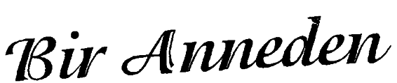
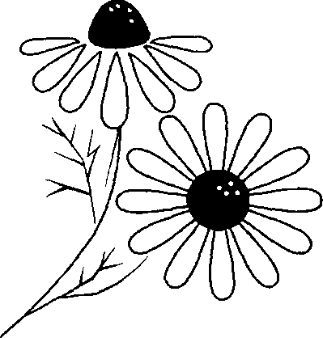
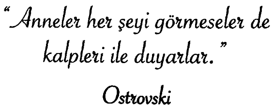
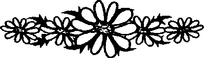

Bundan 20 yıl sonra, yaptıkların değil, yapamadıkların için üzüleceksin, dolayısı ile halatları çöz. Güvenli limandan uzaklara yelken aç. Rüzgârı yakala, araştır. Düşle. Keşfet. Onlar, seyredecek binleri olmasaydı, kaç kişi Mercedes otomobil alırdı.
Geçen hafta bir ayakkabıcıda ceketine böyle bir iğne takmış genç bir satıcıya rastladım. Kendisi yapmış, çok hoşuma gitti: ‘Bir tebessümün yoksa sana benimkilerden birini verebilirim.’ Bilimde ve güzel sanatlarda en üstün başarılar, tek başlarına çalışan kişiler tarafından elde edilmiştir. Hiçbir parkta bir kurul için dikilmiş anıt yoktur.
Derdi eve davet edersen, çoğunlukla hemen gelir. Yapabileceğin kadar söz ver. Sonra söz verdiğinden daha fazlasını yap.
Oturarak başarıya ulaşan tek şey bir tavuktur.
Kalp gözü, gözle görülmeyenleri de görür, dertlerini gözyaşlarında boğmak isteyenlere dertlerin yüzme bildiğini söyle.
Dalın ucuna gitmekten korkma, meyve oradadır; büyük adam büyüklüğünü, küçük adama davranışıyla gösterir.
Şans bukalemun gibidir, biraz zaman tanı, mutlaka değişecektir.
Yanlış yöndeyseniz, Tanrı ‘U’ dönüşlerine izin verir. ‘Tarihte En Etkin 100’ adlı kitabı okudum. Onların hepsiyle ortak olduğumuz tek şeyin zaman olduğunu hayretle gördüm, dünyayı değiştiren bu insanların da günleri senin, benim gibi 24 saatti.
Günün sonunda kendini bir sokak köpeği kadar yorgun hissediyorsan, belki bütün gün hırladığın içindir.
Başlamak için en uygun zamanı beklersen, hiç başlamayabilirsin. Şimdi başla! Şu anda bulunduğun yerden elindekilerle başla.
Dost, senin hakkında her şeyi bilen ve buna rağmen seni seven kimsedir.
Gülümsediğinde güzelleşmeyen bir yüz hiç görmedim.
Kızgınlık ve küskünlük, zaten çok kısa olan hayatın değerli dakikalarını harcamaktır.
Baban enflasyonun her şeyi mahvetmediğini söylüyor, bir madeni para hâlâ tornavida yerine kullanılabiliyor.
Dene, risk al. Kimi zaman içindeki o sessiz sese, uzmanlardan daha fazla güven.
Aerodinamik yasalarına göre o tombul ve tüylü arının uçmaması gerekiyordu. Herhalde bunu ona kimse söylemedi ki, uçuyor.
Zamanlarının büyük bir kısmını para kazanmak ve saklamakla geçiren insanlar, sonunda, en çok istediklerinin satın alınamayacak şeyler olduğunu anlarlar.
Hiç kimse mutlu olma garantisine sahip değildir. Hayal herkese yalnızca zaman ve yer veriyor. Bunları neşeyle doldurmak bize kalmış bir şey.
Mutlu olmanın en garantili yolu bir başkasını mutlu etmektir.
Öteki insanlardan daha akıllı ol, yalnızca bunu onlara söyleme.
Ya tozu dumana katarsın ya da tozu dumanı yutarsın.
Bir çocuk yaşlı bir hanıma, genç mi, yoksa yaşlı mı olduğunu sormuş. “Sevgilim,” diye yanıtlamış hanım. “Ben çok uzun zamandır gencim!..”
İyi çalışan, sık gülen ve çok seven başarıyı elde eder.